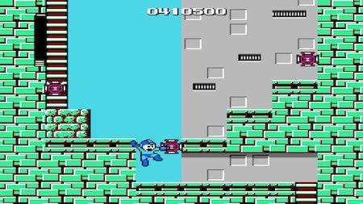
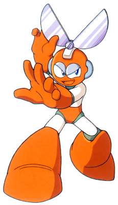

This is the main walkthrough section of the website. You can play through the levels in the order suggested in the table of contents below; there will be buttons at the bottom of each section to take you to the next and previous parts. Alternatively, you can click on one of the levels in the table if you need help with a specific level.
Table of Contents
C) Cut Man's Stage
Reaching The Boss
Reaching The Boss
This level takes place in an abandoned industrial factory, heavily guarded by artillery. This one is a lot more vertical than the last level, so get ready to climb up lots of ladders. In the starting area, you'll notice a lot of large green blocks sitting around. You can pick these up using the recently acquired Super Arm from Guts Man; to do this, open the weapon screen and you'll notice there's a new bar with the letter 'G' next to it. Scroll up to it and press the start button again to equip this new power. Try it out with the nearby blocks; you can use it to throw some at the blue Bunby Helis which will start coming in from the right. It's pretty good as it can kill many of them at once. Use it as much or as little as you wish throughout the level. Personally, I prefer the Mega Buster but it's up to you.
You'll see that there is now also another bar ito the left of the health bar. This is the weapon's power bar, and as you may have noticed, this will steadily deplete as you use the Super Arm. Each different weapon that we will obtain from now on will have its own power bar (except the Mega Buster, which can be used infinitely). When this bar runs out, you will no longer be able to use that weapon. You can pick up blue items such as the arm cannon we saw in Guts Man's stage to refill a bit of this bar, but otherwise the bar will not refill until the start of the next level. Whether you want to use this new weapon or not, I recommend you save at least a quarter of its power bar to use against the boss, as it can make things much, much easier.
Begin moving right, destroying the blue nuisances that swarm you relentlessly. If you're taking the lower path here, the best way to get rid of them is to jump and shoot just as they start to dive bomb you. On the top path, you can just shoot forward without jumping and you should be alright. Unfortunately, you're pretty vulnerable when climbing any of the small ladders around here, so I'd say just stick to the top path and try not to fall down. Use the blocks if you wish to (or don't; remember, make sure your weapon bar doesn't run out). The enemies may drop larger blue weapon refills than the cannon-like one we've seen so far; as you can guess, these restore more weapon power, so keep an eye our for them, but don't rely on them.
Soon you'll reach a point where you can't go any more to the right. This is when it's time to start heading upwards, using the ladders. The laser cannon enemies on the walls are known as Blasters, and they release a series of 4 laser shots which can damage you and cause you to fall down (very harmful in a vertical area like this). Thankfully, they'll always shoot in the exact same pattern, so hang back for a moment to look at where their attacks are shooting, and then take care to avoid as you climb. You can defeat them with one shot, and the best way to do this is by holding left or right while on a ladder and pressing the shoot button; just make sure they're not about to shoot a beam at you. Your shots can travel through walls, so use that to hit the left one here.
On the screen one level up, you'll find 3 Blasters. To destroy the first one, just above where you came up from the right, wait until it shoots its 4 beams and closes, stand to the left of it, and jump to shoot it as soon as it opens again. (I should also note, you can only hit them when they open, but you probably realise that by now.) When it's gone, jump over the small pit to the left (be careful as the ceiling is low here and if you fall, the enemies down below will have respawned again). There is a reliable way to avoid getting hit by these 2 blasters to the top right. When they aren't shooting, climb up the ladder to the left and stand on the very top of it. If you stand here without moving and jumping you will be safe (the Blaster shots won't be able to hit you). Wait for an opening, when the Blasters close for a moment, and use this opportunity to shoot them as soon as they open. When you've disposed of them, move up to the next screen.
This screen looks similar to the last. You are safe if you stop moving on the ladder as soon as the screen loads, but otherwise there aren't many safe spots here, so try to learn the pattern of where the shots are flying to like before. You will probably get hit less if you climb the rightmost ladder instead of the one over to the left. Defeat them and move upwards once more. As soon as you reach the next screen, start shooting left to get rid of a nastily placed Blaster. Jump over the pit, climb the ladder to reach two more Blasters (there are a lot of these, aren't there) and, again, go up.
We're finally in a horizontal area again. Run right as soon as possible and don't stop running, because the grey container here will spit out a load of Super Cutters (these enemies look like Pac-Man if he was white, in my opinion). You will encounter another group of new enemies, blue Kamadomas. Shoot them (another enemy that dies in one hit. Thank goodness) and keep heading right. We'll now see another type of new enemy, red little guys with one eye. These are known as Adhering Suzies (one of the more bizarre and funny enemy names) and they don't pose much of a challenge. Their defining trait is that they only move in a straight line, either up and down or left and right. Just look at where their paths take them and kill them before going near them. You can get past them easily with no damage so make sure you don't waste valuable health on them. The ones that move horizontally are a bit harder to kill, just shoot rapidly at them when they start to move away from you. Move up a screen.
4 more Adhering Suzies (ha) to defeat. You could use the block here with the Super Arm but, honestly, it's probably more straightforward to just keep using the Mega Buster. Get rid of them and move up once more to find yet another 4. The first one here is easy, but to take out number 2 without damage is possible but a bit finicky. You need to stand in the exact location shown in the image below and only jump up for a brief second, when the Suzy moves to the right, to shoot it. It's a very small window of time but you'll be able to do it. (Alternatively, you COULD just jump past and ignore it... but it's always worth defeating them when you can in case of item drops.) As for the other 2 enemies left, it's simple to kill them, so do that and then... you know the drill. Up you go. We're going to keep climbing higher to the top of the fortress.
5 more Suzies. Don't think I need to go into detail here; you should be good at defeating them (or at least running past them) by now. Up a screen and this should look familiar. We're at another Pac-Man mass production factory. Hurry right, take out the unexpected Bunby Helies, nab the generous health pickup tucked away in the long alcove and descend the ladder.
The enemy on this next screen sucks. It's called a Mambu and it's like a combination of the Metall and the Blasters... that can fly, and shoot 8 shots instead of four. Because these guys move across the screen, there's not really a space that's guaranteed to always be safe from their line of fire. However, they do shoot their beams at 45-degree angles to each other so just try and stay in places where you can avoid them. You can try and kill them if you'd like but if you're low on health just get down to the next screen and leave them alone. Down below we have a very similar area with the same enemy. The worst part about this is that if you get hit you might rebound and fall into the spikes below. Don't let that happen. Head down the ladder for our final stretch.
This area is just like the part near the end of Guts Man's stage, except this Big Eye is red instead of blue. You can use the strategies I talked about there (run past when it jumps high or try to hit it loads of times and have good luck) or you could throw the blocks at it. Three of them will kill it. Head to the corridor leading up to the boss now. You'll have to face three Screwdrivers. The first and third are no problem as they are directly in front on the ground so you can just mash shoot, but the second is on the ceiling so you'll need to jump and aim. Their 5 beam shots can be annoying. Pray that they drop health pickups and then, making sure you have the Super Arm equipped, head through the last door.
Boss Fight: Cut Man
Hopefully you have enough weapon power left to use the Super Arm twice! Yes, Cut Man is weak to Guts Man's ability (rock beats scissors!), so if you can throw the two blocks here at him, he'll die in two hits. It's as easy as that. Make sure you throw them when he's on the ground so he doesn't jump out of the way. If you miss with one, still try to hit him once, as it'll still take out half of his health bar making the fight a whole lot easier. Oh, and also, if you die any blocks you used won't respawn. Otherwise, you're just going to have to use the Mega Buster. He still takes a nice amount of damage from each shot of this, but it's nowhere near as effective as the blocks. If you're using this method, it is definitely possible but you will probably need a lot of health to survive.
As for his attacks, he will throw his cutter at you and then it will return to him like a boomerang. Jump just before it touches you and you should be unharmed. Sometimes though, he'll move in right next to you making things very awkward. He also jumps around a lot which can lead him to evade your shots... this is pretty irritating. If you can throw the blocks and have more than a third of your health, don't even worry about his attacks, just make sure the blocks hit him and he'll be done before you know it. Grab the sphere left behind.
New Weapon: Rolling Cutter
Cut Man's weapon functions as a very sharp boomerang. When you throw it, it'll move in a teardrop-shaped pattern in front of you and then come back. It's useful against some normally invincible enemies in Elec Man's stage, which is where we're headed next.
Select Elec Man's stage next.